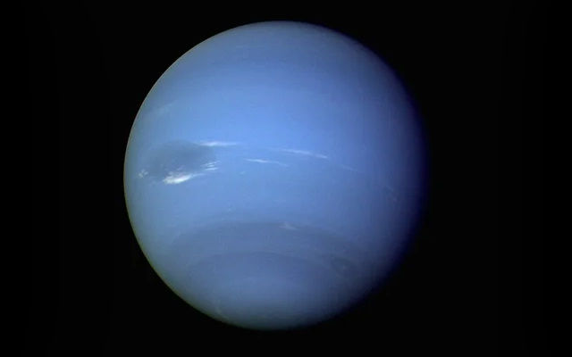
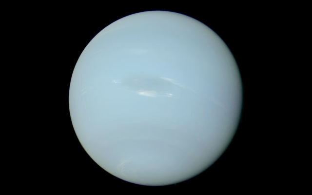

Neptune
Neptune is the eighth, and as of yet, is currently farthest known planet from the Sun
Information

| Property | Value |
|---|---|
| Mass (1024 kg) | 102.409 |
| Volume (1010 km3) | 6,254 |
| Mean Density (kg/m3) | 1,638 |
| Surface Area | 7.618 billion km2 |
| Average Temperature | ~59 K (-214 C) |
| Wind Speeds | Up to 550 m/s |
About Neptune


Neptune is the eighth, and currently farthest known planet from the Sun. It regained this title after Pluto was reduced to a dwarf planet in August 2006. It is the fourth-largest planet in the Solar System and is composed primarily of gases and liquids, without a well-defined solid surface. It has an orbital period of 164.8 years. Neptune currently has 16 known natural satellites, the largest of which being Triton.